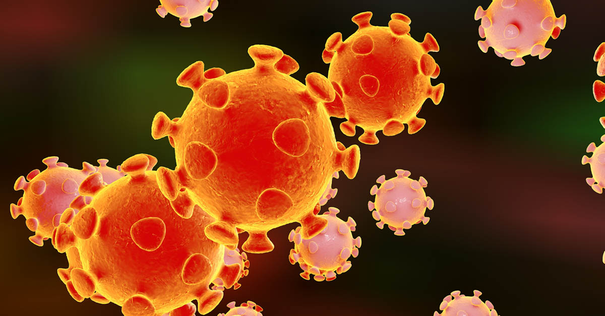
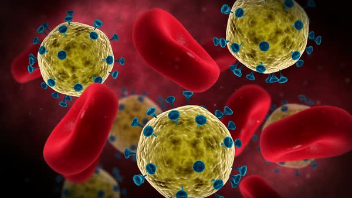
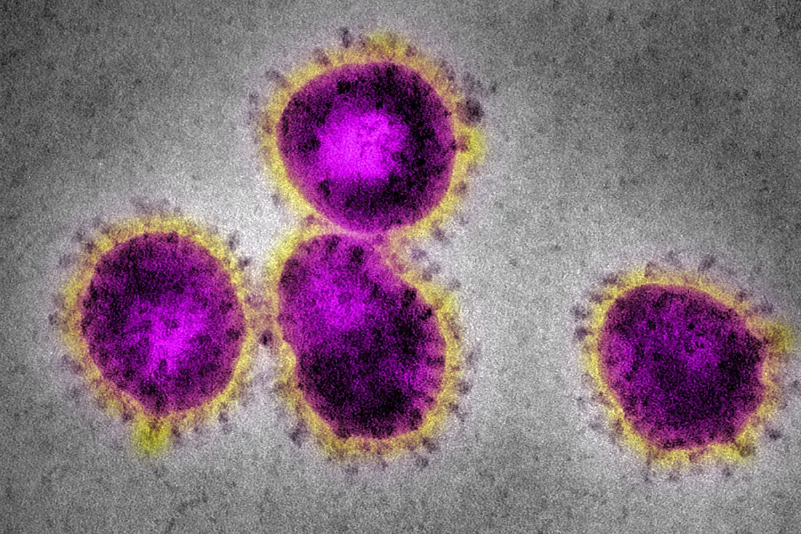

Shape of COVID-19
COVID-19 is an infectious disease caused by a new virus. The first case of this virus was reported in China whereas India had reported its first case on 30 January 2020. As of 4th April around 3,072 cases are confirmed in India till now. The infection rate of this coronavirus in India is reported to be 1.7 which is significantly lower than in the worst affected countries.On 22 March 2020, India observed a 14 hour voluntary public curfew to break the chain of this virus. On 24 March,2020 our prime minister Mr. Narendra Modi ordered a nationwide lockdown for 21 days.
According to the recent report it is said that India could have witnessed a surge of 31,000 cases of disease between March 24 and April 14 without lockdown. It is also said this lockdown helps us to improve nature. A recent report said that a hole in the ozone layer above Antartica has continued to recover, leading to changes in atmospheric circulation. The changing wind patterns have led to the recovery of ozone layer.


Coronavirus in blood

It's impact on Earth
The top 5 countries which are mostly affected by this virus are:
- USA with 311,637 cases
- Spain with 130,759 cases
- Italy with 124,632 cases
- Germany with 96,108 cases
- France with 89,953 cases
Till 5th April the number of cases across the world has marked to around 12,03,485 with 64,784 deaths. As the days passing the global death rate is incresing with decreasing the rate of recovered patients.India has reported over 3600 cases with 100 deaths. The following is the state wise report of COVID-19 cases in India:
| States | 4th April,2020 | 5th April,2020 | States | 4th April,2020 | 5th April,2020 |
| Kerala | 286 | 299 | Punjab | 53 | 65 |
| Delhi | 386 | 500 | Jammu and Kashmir | 78 | 92 |
| Rajasthan | 198 | 210 | Ladakh | 13 | 13 |
| Uttar Pradesh | 203 | 242 | Maharashtra | 537 | 661 |
| Karnataka | 128 | 146 | Tamil Nadu | 411 | 485 |
| Haryana | 59 | 74 | Telangana | 237 | 272 |
| Andhra Pradesh | 180 | 226 | Himachal Pradesh | 4 | 4 |
| Gujarat | 105 | 122 | Uttarakhand | 16 | 22 |
| Odisha | 9 | 9 | West Bengal | 54 | 54 |
| Chandigarh | 16 | 16 | Chhatisgarh | 19 | 19 |
| Bihar | 29 | 32 | Madhya Pradesh | 164 | 167 |
| Puducherry | 6 | 6 | Manipur | 2 | 2 |
| Mizoram | 1 | 1 | Goa | 7 | 7 |
| Assam | 25 | 25 | Arunachal Pradesh | 1 | 1 |
| Jharkhand | 1 | 3 | Andaman and Nicobar Islands | 10 | 10 |
If you want to see the report of confirmed cases in India on a particular date then type the date and you will get your result.